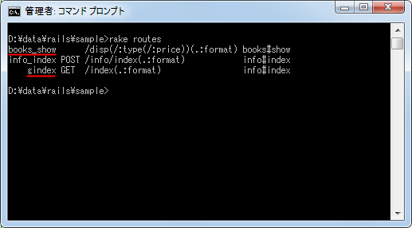

matchメソッドを使ったルーティング設定
前のページに引き続いてリソースベースではないルーティングの設定方法について解説します。ここではmatchメソッドを使い、リクエストのURLと呼び出すアクションを1対1で結びつけていくルーティングの設定方法について解説します。
1.matchメソッドを使った基本書式
2.HTTPメソッドの指定
3.パラメータの指定
4.動作確認
5.asオプションでルーティングに名前を付ける
matchメソッドを使った基本書式
matchメソッドを使ったルーティングでは、利用者からもリクエストのURLのパスと呼び出すアクションを結び付けていきます。「config/routes.rb」ファイルには色々な設定サンプルがコメントとして表示されていますが、今回使用するルーティングも先頭付記に次のように記述されています。
Sample2::Application.routes.draw do # Sample of regular route: # match 'products/:id' => 'catalog#view' # Keep in mind you can assign values other than :controller and :action end
matchメソッドを使った書式は次のとおりです
match 'パス' => 'コントローラ名#アクション名'
パスというのはリクエストのURLの中の「http://localhost:3000/パス」の部分です。例えば「http://localhost:3000/disp」というURLへアクセスした時に「books」コントローラの「show」アクションを呼び出したい場合には次のようにルーティングを設定します。
match 'disp' => 'books#show'
このようにURLに含まれる任意のパスに対して実際に呼び出すアクションを設定することができます。
同じように「http://localhost:3000/mybook/disp」というURLへアクセスした時に呼び出したい場合は次のようにルーティングを設定します。
match 'mybook/disp' => 'books#show'
もし「http://localhost:3000/books/show」というURLへアクセスした時に「books」コントローラの「show」アクションを呼び出したい場合のようにパスがコントローラ名とアクション名の組み合わせと同じ場合は右側の部分は省略できます。よって次の2つの記述は同じルーティングを表します。
match 'books/show' => 'books#show' match 'books/show'
HTTPメソッドの指定
利用可能なHTTPメソッドを指定することも可能です。HTTPメソッドとは GET や POST のことです。指定しない場合は全てのHTTPメソッドが対象となりますが、GET だけ又は POST だけといった制限を加えることができます。指定する場合は via オプションを使って次のように記述します。
match 'disp' => 'books#show', :via => :get match 'disp' => 'books#show', :via => :post
また via オプションを使用するかわりに、次のように記述することもできます。
get 'disp' => 'books#show' post 'disp' => 'books#show'
HTTPメソッドは GET や POST だけではなく PUT や DELETE も指定可能です。
パラメータの指定
パラメータを指定する場合は「:パラメータ名」を使用して次のように記述します。
match 'disp/:type' => 'books#show' match 'disp/:type/:price' => 'books#show' match 'disp(/:type(/:price))' => 'books#show'
1番目はパラメータが1つのもので「http://localhost:3000/disp/business」というURLでリクエストを送信すると、「show」アクションが呼び出されそのアクションの中で「param[:type]」で値を取り出すことができます。2番目はパラメータが複数になった場合、3番目はパラメータを省略可能にした場合です。
省略可能なパラメータにはデフォルト値を設定することもできます。デフォルト値を指定する場合は defaults オプションを使って次のように記述します。
match 'disp(/:type)' => 'books#show', :defaults => {:type => 'novel'}
「type」パラメータが省略された場合はデフォルトの値として「novel」が設定されます。デフォルト値が指定できるのはパラメータだけでコントローラやアクションのデフォルト値は指定できません。
動作確認
それでは実際に試してみます。現在「sample2」アプリケーションには「info」コントローラと「books」コントローラが作成されており、「info」コントローラには「index」アクション、「books」コントローラには「show」アクションが定義してあります。
今回ルーティングの設定として「config/routes.rb」ファイルをテキストエディタで開き、次のように記述しました。
Sample2::Application.routes.draw do match 'disp(/:type(/:price))' => 'books#show' post 'info/index' get 'index' => 'info#index' end
次にコントローラでパラメータを処理するために「app/controllers/books_controller.rb」ファイルを次のように記述しました。リクエストのURLに含まれるパラメータを取得して変数に設定しています。
class BooksController < ApplicationController
def show
@type = params[:type]
@price = params[:price]
end
end
最後にコントローラで設定した変数をビューの中で参照し利用者へ返すようにします。「app/views/books/show.html.erb」ファイルを次のように記述しました。
<h1>Books#show</h1> <p>Find me in app/views/books/show.html.erb</p> <p>type = <%= @type %></p> <p>price = <%= @price %></p>
それでは準備ができましたのでRailsアプリケーションを起動して下さい。そしてまずブラウザから「http://localhost:3000/disp/novel/1000」へアクセスして下さい。すると次のように表示されます。
続いて「http://localhost:3000/info/index」へアクセスして下さい。すると次のようにエラー表示されます。
ルーティングの設定は行われていますがHTTPメソッドとしてPOSTが指定してあったためGETでリクエストを送信した場合はマッチしませんでした。
最後に「http://localhost:3000/index」へアクセスして下さい。すると次のように表示されます。
以上のようにmatchメソッドを使って1つ1つルーティングの設定を定義していくことで、任意のパスに対して呼び出すアクションを結びつけることが出来ます。
asオプションでルーティングに名前を付ける
先程ルーティングの設定として「config/routes.rb」ファイルをテキストエディタで開き、次のように記述しました。
Sample2::Application.routes.draw do match 'disp(/:type(/:price))' => 'books#show' post 'info/index' get 'index' => 'info#index' end
「rake routes」コマンドを使って設定されているルーティングを確認してみます。
見て頂くとお分かり頂けるように2番目と3番目のルーティングには先頭に「info_index」や「index」という記述があります。これはルーティングの名前です。
「link_toメソッドを使ったリンクの作成」の箇所で詳しくご説明いたしますが、ルーティングに名前が付いているとテンプレートの中でlink_toメソッドでリンク先を指定する時に、ルーティングに設定された名前を使って指定することができます。
設定したルーティングによっては自動で名前が付くものもありますが、asオプションを使って明示的に名前を付けることができます。例えば次のように指定します。
match 'パス' => 'コントローラ名#アクション名', as: '名前'
'名前'で指定した文字列が、このルーティングの名前になります。
では実際に試してみます。「config/routes.rb」ファイルをテキストエディタで開き、次のように記述しました。
Sample2::Application.routes.draw do match 'disp(/:type(/:price))' => 'books#show', as: 'books_show' post 'info/index' get 'index' => 'info#index', as: 'gindex' end
「rake routes」コマンドを使って設定されているルーティングを確認してみます。

指定した名前が付けられていることが確認できます。デフォルトで名前が付けられていたルーティングについても、明示的に指定した名前のほうが優先されます。実際の使い方は先程記載したテンプレートの解説ページでご確認下さい。
( Written by Tatsuo Ikura )

著者 / TATSUO IKURA
初心者～中級者の方を対象としたプログラミング方法や開発環境の構築の解説を行うサイトの運営を行っています。